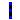
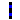
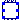

Multi-phase buses
This package contains models for multi-phase buses.
It contains single-phase, two-phase and three-phase buses that are used as nodes in the system. It also contains one model for a three-phase infinite bus model and a measurement bus.
Extends from Modelica.Icons.Package (Icon for standard packages).
| Name | Description |
|---|---|
| InfiniteBus | Three-phase infinite bus |
|  Bus_3Ph | Three-phase bus |
|  Bus_2Ph | Two-phase bus |
| Bus_1Ph | Single-phase bus |
|  MeasurementBus | Three-phase active and reactive power measurement bus |
Three-phase infinite bus
This is a three-phase infinite bus model.
An infinite bus represents a very strong system. This means that no matter how much power is drained from or injected in it, the bus will keep the values of frequency, voltage magnitude and voltage angle constant.
The infinite bus also provides the angle references that can be used in coherency studies or in power flow results.
Extends from ThreePhaseComponent (Partial model for inheritance of single-phase base power based on three-phase system base power.).
| Name | Description |
|---|---|
| Power flow data | |
| S_b | System base [V.A] |
| S_p | Phase base [V.A] |
| V_b | Base voltage of the bus [V] |
| V_A | Voltage magnitude for phase A [1] |
| angle_A | Voltage angle for phase A [rad] |
| V_B | Voltage magnitude for phase B [1] |
| angle_B | Voltage angle for phase B [rad] |
| V_C | Voltage magnitude for phase C [1] |
| angle_C | Voltage angle for phase C [rad] |
| P_A | Initial active power [W] |
| Q_A | Initial reactive power [var] |
| P_B | Initial active power [W] |
| Q_B | Initial reactive power [var] |
| P_C | Initial active power [W] |
| Q_C | Initial reactive power [var] |
| fn | System frequency [Hz] |
| Name | Description |
|---|---|
| p1 | |
| p2 | |
| p3 |
Three-phase bus
This is a three-phase bus model.
A bus represents a node in a power system. Therefore, this model can be used to verify voltage magnitude and angle in the three-phase nodes of the system.
Although it is not necessary, it is extremely recommended to connect one bus model between two other three-phase models.
Please, check if this bus model is the appropriate one for your system. For the connection of two- or single-phase models, two- or single-phase buses might be a better fit.
Extends from ThreePhaseComponent (Partial model for inheritance of single-phase base power based on three-phase system base power.).
| Name | Description |
|---|---|
| Power flow data | |
| S_b | System base [V.A] |
| S_p | Phase base [V.A] |
| V_A | Voltage magnitude for phase A [1] |
| V_B | Voltage magnitude for phase B [1] |
| V_C | Voltage magnitude for phase C [1] |
| angle_A | Voltage angle for phase A [rad] |
| angle_B | Voltage angle for phase B [rad] |
| angle_C | Voltage angle for phase C [rad] |
| Name | Description |
|---|---|
| p1 | |
| p2 | |
| p3 |
Two-phase bus
This is a two-phase bus model.
A bus represents a node in a power system. Therefore, this model can be used to verify voltage magnitude and angle in the two-phase nodes of the system.
Although it is not necessary, it is extremely recommended to connect one bus model between two other two-phase models.
Please, check if this bus model is the appropriate one for your system. For the connection of three- or single-phase models, three- or single-phase buses might be a better fit.
Extends from ThreePhaseComponent (Partial model for inheritance of single-phase base power based on three-phase system base power.).
| Name | Description |
|---|---|
| Power flow data | |
| S_b | System base [V.A] |
| S_p | Phase base [V.A] |
| V_1 | Voltage magnitude for phase 1 [1] |
| V_2 | Voltage magnitude for phase 2 [1] |
| angle_1 | Voltage angle for phase 1 [rad] |
| angle_2 | Voltage angle for phase 2 [rad] |
| Name | Description |
|---|---|
| p1 | |
| p2 |
Single-phase bus
This is a single-phase bus model.
A bus represents a node in a power system. Therefore, this model can be used to verify voltage magnitude and angle in the single-phase nodes of the system.
Although it is not necessary, it is extremely recommended to connect one bus model between two other single-phase models.
Please, check if this bus model is the appropriate one for your system. For the connection of three- or two-phase models, three- or two-phase buses might be a better fit.
Extends from ThreePhaseComponent (Partial model for inheritance of single-phase base power based on three-phase system base power.).
| Name | Description |
|---|---|
| Power flow data | |
| S_b | System base [V.A] |
| S_p | Phase base [V.A] |
| V_1 | Voltage magnitude for phase 1 [1] |
| angle_1 | Voltage angle for phase 1 [rad] |
| Name | Description |
|---|---|
| p1 |
Three-phase active and reactive power measurement bus
This three-phase measurement device should be connected in series, between two other devices. The main features of this device are listed below:
The device returns, as real outputs, active and reactive powers coming from each of the three phases. All values are calculated in per unit, using the system's three-phase power base, S_b, provided in model SystemBase. The outputs are explained in the list below:
Extends from ThreePhaseComponent (Partial model for inheritance of single-phase base power based on three-phase system base power.).
| Name | Description |
|---|---|
| Power flow data | |
| S_b | System base [V.A] |
| S_p | Phase base [V.A] |
| Name | Description |
|---|---|
| p1 | Phase A output |
| p2 | Phase B output |
| p3 | Phase C output |
| p4 | Phase A input |
| p5 | Phase B input |
| p6 | Phase C input |
| pa | [pu, system base] [1] |
| pb | [pu, system base] [1] |
| pc | [pu, system base] [1] |
| qa | [pu, system base] [1] |
| qb | [pu, system base] [1] |
| qc | [pu, system base] [1] |